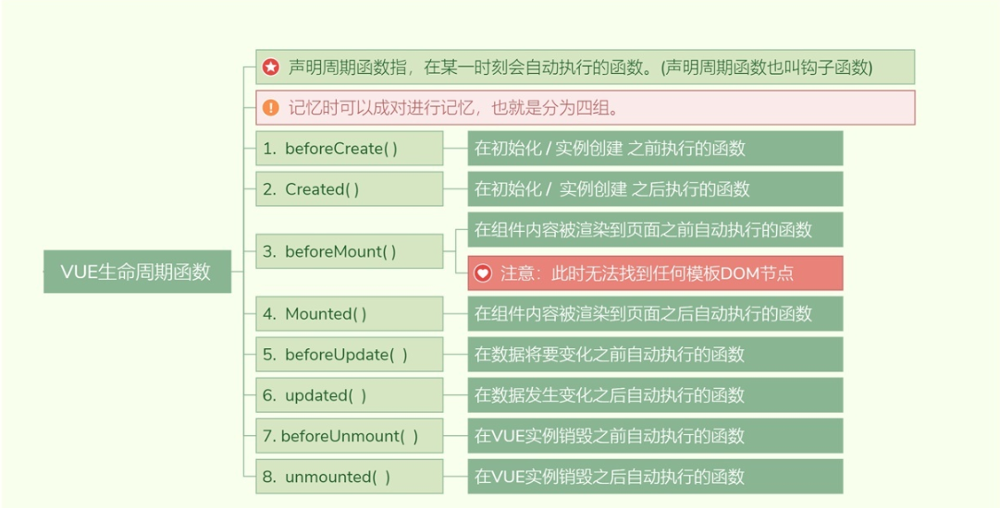
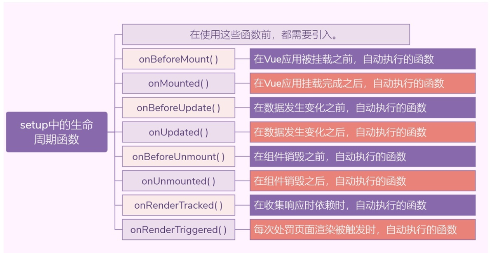
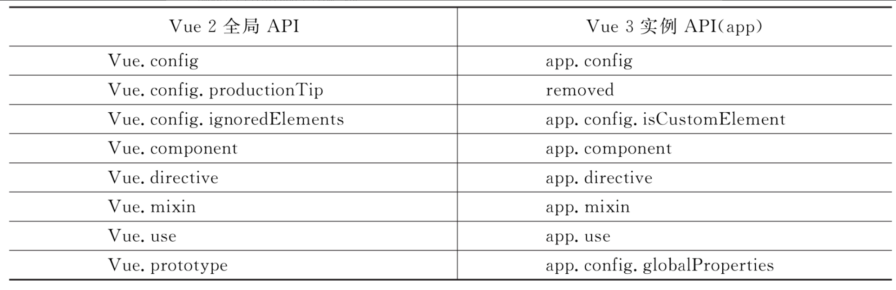

Contents
10. Vue3新特性详讲¶
10.1. 1.为什么要用Vue3¶
在学习Vue 3的新特性之前，先来看一下Vue 3设计的目的是什么，为什么要对Vue 2做出很大的改变，以及Vue 3到底解决了什么问题。
像Vue这样全球闻名的前端框架，在任何一次改动时，设计者都是经过深思熟虑的权衡，所以，Vue 3的出现肯定是解决了某些棘手的问题。下面介绍一下Vue 2中遇到的问题。
10.1.1. 1.1 Vue2对复杂功能的处理不友好¶
在使用Vue 2开发项目的过程中，随着更加复杂的业务逻辑的增加，复杂组件的代码变得难以维护。尤其是一个开发人员从别的开发人员手中接过一个新项目时，这个问题更突出。究其根本原因，Vue 2中的API是通过选项来组织代码的，但是大部分情况下，通过逻辑来组织代码会更有意义。
Vue 2中缺少多个组件之间提取和复用逻辑的机制，现有的重用机制都有很多缺点。
10.1.2. 1.2 Vue2中mixin存在缺陷¶
10.1.3. 1.3 Vue2对TypeScript的支持有限¶
Vue框架的开发者都清楚，Vue 2对TypeScript的支持并不友好，这是因为在Vue中是依赖this上下文对象向外暴露属性，但是在组件中的this与普通的JavaScript中的Object对象处理的方式不同。
其实，在Vue 2设计时就没有考虑对TypeScript的集成和强制类型的相关问题，所以才导致在Vue 2中使用TypeScript有很多阻碍。
10.2. 2.Vue3简介¶
众所周知，前端技术一直更新得很快，特别是前端框架，更新速度更是极快的。
在2020年4月21日晚上，Vue的作者尤雨溪在B站上直播分享了Vue 3 Beta的最新进展，直到9月19日，Vue 3正式版才发布。
这个耗时两年，历经99位代码贡献者，2600多次代码提交的大版本更新终于和众多开发者见面了。
为了减少前端开发者的学习成本，Vue 2的大部分特性保留到了Vue 3中，开发者可以像使用Vue 2一样，原封不动地使用Vue 3，这是遵循了渐进式的准则。如果你是一个保守派，只想使用Vue 2的写法，也是完全没有问题的。
10.2.1. 2.1 Vue3增加了以下新特性¶
1. Vue3在性能上有很大提升¶
但没有哪一位开发者不想要更快、更轻的框架。Vue 3给开发者带来了极致的开发体验。整个Vue 3的代码库被重新编写成了一系列独立的、可实现不同功能的模块。
据官方介绍，Vue 3的代码打包大小减少了41%，初次渲染速度提升了55%，更新效率提升了33%，内存使用率减少了54%。这些数据都得益于Vue 3中重构了虚拟DOM的写法，提升渲染速度。
2.Vue3推出了新的API¶
在Vue 2中遇到了一些问题，例如，复杂组件的代码变得越来越难以维护，缺少一种纯粹的多组件之间提取和复用逻辑的机制。
虽然Vue 2中也提供了相关的解决方案，但是在Vue 2中对于重用机制这一部分也存在一些弊端。
所以，Vue 3中设计了Composition API，这也是本章重点介绍和使用的Vue 3的新特性。
Composition这个单词是“组合”的意思，是Vue 3新推出的一系列API的合集，主要包括了以下API。
（1）ref。
（2）reactive。
（3）computed。
（4）watch。
（5）新的生命周期函数。
（6）支持自定义Hooks函数。
（7）Teleport。
（8）Suspense。
（9）全局API的修改和优化。
3.更好地支持TypeScript¶
有在Vue 2中集成TypeScript的开发者应该都体会过其中的痛苦，因为Vue 2在推出的时候没有把TypeScript作为一个考量范围，所以在设计Vue 3的时候，设计者们就痛定思痛，考虑了这方面的问题。
Vue 3的源代码全部都是使用TypeScript语法编写的，提供了非常完备的类型定义，在使用Vue 3开发项目时，可以把TypeScript语法深入到各个大型项目中，让开发者更加方便地享受类型推论等一系列TypeScript的红利。
同时，还可以在VSCode等编辑器中安装相关的插件，完美地使用TypeScript的各种功能。
10.3. 3.Vue3项目搭建¶
Vue CLI脚手架简介
参考Vue工程化项目。
10.4. 4.Vue3项目的目录结构¶
目录/文件 说明
build 项目构建(webpack)相关代码
config 配置目录，包括端口号等。我们初学可以使用默认的。
node_modules npm 加载的项目依赖模块
src 这里是我们要开发的目录，基本上要做的事情都在这个目录里。里面包含了几个目录及文件：
assets: 放置一些图片，如logo等。
components: 目录里面放了一个组件文件，可以不用。
App.vue: 项目入口文件，我们也可以直接将组件写这里，而不使用 components 目录。
main.js: 项目的核心文件。
index.css: 样式文件。
static 静态资源目录，如图片、字体等。
public 公共资源目录。
test 初始测试目录，可删除
.xxxx文件 这些是一些配置文件，包括语法配置，git配置等。
index.html 首页入口文件，你可以添加一些 meta 信息或统计代码啥的。
package.json 项目配置文件。
README.md 项目的说明文档，markdown 格式
dist 使用 npm run build 命令打包后会生成该目录。
Vue 3的项目目录结构与Vue 2的类似，唯一不同的是很多.js文件改为了.ts文件。
其中，src目录下的shims-vue.d.ts是用来定义Vue类型的TypeScript配置文件。
因为.vue结尾的Vue组件文件在TypeScript中是不能被直接识别的，所以需要使用该配置文件来讲明.vue的类型，便于TypeScript进行解析。
在Vue 2中使用new关键字实例化Vue对象，然后通过构造函数将选项属性传入Vue实例中。而Vue 3对main.js做了修改，在Vue 3中使用的是.ts类型的文件编写的入口文件，示例代码如下：
import { createApp } from 'vue'
import App from './App.vue'
import router from './router'
import store from './store'
import ElementPlus from 'element-plus'
import 'element-plus/dist/index.css'
import axios from 'axios'
createApp(App).prototype.$axios = axios
createApp(App).use(store).use(router).use(ElementPlus).mount('#app')
Vue3的main.ts文件中引入了createApp函数，然后引入App.vue组件，调用createApp函数来创建Vue实例，
将所有的模块使用Vue实例对象进行调用，而不是像Vue 2中直接传入Vue对象的构造方法中，这是Vue 3做的很大改进。
10.5. 5.Vue.js 3.0的新变化1—组合API¶
Composition API是Vue的下一代主要版本中最常用的语法，它是一种全新的逻辑重用和代码组织的方法。在Vue 2中使用的是Options API的方式构建组件，如果要向Vue组件中添加业务逻辑，则需要先填充选项属性，例如data、methods、computed等。
这种方式最大的缺点是，它本身并不是有效的JavaScript代码，需要先了解模板中可以访问哪些属性，然后使用Vue的编译器将这些属性转换成可以执行的代码，这样做既消耗了性能，又无法做更好的类型检查。
Composition API设计的目的是通过将当前可用组件属性作为JavaScript函数暴露出来，这种机制可以基于功能的附加API灵活地组合组件逻辑，使Composition API编写的代码更易读。
10.5.1. 5.1 setup()函数¶
setup()函数是一个新的组件选项，它是组件内部使用组合API的入口点。
1. setup使用注意点¶
执行时机
beforeCreate——setup——Create
注意点
- setup函数中无法使用this.data和this.methods(因为他们还没创建出来)
- setup函数无法执行异步操作（async）
Composition API的主要思想是，将Vue组件的选项属性定义为setup()函数返回的JavaScript变量，而不是将组件的功能（例如state、method、computed等）定义为对象属性。
setup()函数的执行时机是在beforeCreate之后，created之前。setup()函数有两个参数，第1个参数用于接收props数据。示例代码如下：
<template>
<p> VUE3 新特性学习！！</p>
</template>
<script>
export default {
props: {
msg: {
type: String,
default: () => {}
}
},
setup(props){
console.log(props);
}
}
</script>
<style scoped>
</style>
setup()函数的第2个参数是一个上下文对象，这个上下文对象大致包含了一些属性，示例代码如下：
export default {
name: 'Demo',
props:['msg','school'],
emits:['hello'],
setup(props,context){
console.log('---setup---',context.attrs) //相当与Vue2中的$attrs
console.log('---setup---',context.emit) //触发自定义事件的。
console.log('---setup---',context.slots) //插槽
//数据
let person = reactive({
name:'张三',
age:18
})
//方法
function test(){
context.emit('hello',666)
}
//返回一个对象（常用）
return {
person,
test
}
}
}
这里需要注意，在setup()函数中是无法访问this的。
10.5.2. 5.2 reactive()函数¶
ref 模块是用来声明简单数据类型的，例如,string , number ,boolean 等
reactive 模块是用来声明复杂数据类型的，例如，数组，对象等
1. reactive使用注意点¶
1. reactive参数必须是对象、json、arr
2. 如果给reactive传递其他对象，默认情况下修改对象，界面不会自动更新，想要更新，需要重新赋值的方式。
reactive()用来创建一个响应式对象，等价于2.x的Vue.observable，示例代码如下：
<template>
<p> VUE3 新特性学习！！</p>
<div>
<button @click="incment()">cliek Me!</button>
<p>
一：{{state.count}} 二：{{state.addCount}}
</p>
</div>
</template>
<script>
import {reactive} from "vue";
export default {
setup() {
const state = reactive({
// 创建响应式数据
count: 0,
addCount: 0
});
function incment() {
state.count++;
state.addCount = state.count * 2;
}
return {
state,
incment
}
}
}
</script>
<style scoped>
</style>
10.5.3. 5.3 ref()函数¶
ref()函数用来给给定的值创建一个响应式的数据对象，ref()函数的返回值是一个对象，这个对象上只包含一个.value属性。
1. ref使用注意点¶
1. ref只能实现对简单值的监听
2. template中使用ref的值不用通过value获取
3. js中使用ref的值必须通过value获取
使用ref()函数定义的响应式属性，在template中访问的方法和Vue 2一样，可以直接使用模板语法的形式访问，示例代码如下：
<template>
<p> VUE3 新特性学习！！</p>
<li>{{valueNumber}}</li>
<li>{{valueString}}</li>
<li>{{valueBoolean}}</li>
<li>{{valueNull}}</li>
<li>{{valueUndefined}}</li>
</template>
<script>
import {ref} from "vue";
export default {
setup() {
const valueNumber = ref(0)
const valueString = ref('hell world')
const valueBoolean = ref('true')
const valueNull = ref(null)
const valueUndefined = ref(undefined)
return {
valueNumber,
valueString,
valueBoolean,
valueNull,
valueUndefined
}
}
}
</script>
<style scoped>
</style>
在template使用模板语法直接访问响应式属性，示例代码如下：
<template>
<p> VUE3 新特性学习！！</p>
<p>
{{value}}
{{message}}
</p>
</template>
<script>
import {ref} from "vue";
export default {
setup() {
const value = ref(1)
return {
value,
message: "hello world"
}
}
}
</script>
<style scoped>
</style>
Vue 3中的ref()函数与Vue 2中data()的区别:
先使用Vue 2的语法编写一个计算器的案例，示例代码如下：
<template>
<p> VUE3 新特性学习！！</p>
<p>{{count}}</p>
<button @click="increment">Add 1</button>
<p>The button above has been clicked {{ count }} times.</p>
<p>The computed info {{double}}</p>
</template>
<script>
export default {
data: () => ({
count: 1
}),
methods: {
increment() {
this.count++;
}
},
computed: {
double () {
return this.count *2
}
}
}
</script>
<style scoped></style>
再使用Composition API定义一个完全相同功能的组件，示例代码如下：
<template>
<p> VUE3 新特性学习！！</p>
<p>{{count}}</p>
<button @click="increment">Add 1</button>
<p>The button above has been clicked {{ count }} times.</p>
<p>The computed info {{double}}</p>
</template>
<script>
import {ref,computed } from 'vue';
export default {
setup() {
const count = ref(1);
const double = computed(() => count.value *2);
function increment() {
count.value++
}
return {
count,
double,
increment
}
}
}
</script>
<style scoped>
</style>
在上面的示例中，使用Composition API提供的ref()函数定义了一个响应式变量，其作用与Vue 2的data变量几乎相同。
在Vue 3的示例代码中，increment方法是一个普通的JavaScript函数，需要更改子属性count的value才能更改响应式变量，这是因为使用ref()函数创建的响应式变量必须是对象，以便于在传递的时候保持一致。
Composition API提供了更方便的逻辑提取方式，还是以上面的代码为例，使用Composition提取Counter.vue组件的代码，创建useCounter.js文件，示例代码如下：
import {ref, computed} from 'vue';
export default {
setup() {
const count = ref(1);
const double = computed(() => count.value * 2);
function increment() {
count.value++
}
return {
count,
double,
increment
}
}
}
如果要在其他组件中使用该函数，只需将模块导入组件文件并调用它，导入的模块是一个函数，该函数将从setup()函数中返回定义的变量。示例代码如下：
<template>
<p> VUE3 新特性学习！！</p>
<p>{{count}}</p>
<button @click="increment">Add 1</button>
<p>The button above has been clicked {{ count }} times.</p>
<p>The computed info {{double}}</p>
</template>
<script>
import useCounter from "./useCounter.js"
export default {
setup() {
const { count, increment, double} = useCounter.setup();
return {
count,
increment,
double
}
}
}
</script>
<style scoped>
</style>
这种操作还可以解决Vue 2中mixins命名冲突的问题，示例代码如下：
export default {
setup() {
const { count1, increment1} = useCounter1.setup();
const { count2, increment2} = useCounter2.setup();
return {
count1,
increment1,
count2,
increment2
}
}
}
10.5.4. 3.4 ref辅助操作的函数。¶
Composition API也提供了一些其他的ref辅助操作的函数。
1.isRef()¶
用来判断某个值是否为ref创建出来的对象，在需要展开某个值可能是ref创建出来的对象时使用。示例代码如下：
<template>
<p> VUE3 新特性学习！！</p>
<p>{{count}}</p>
<p>isRef(count) ?{{ unwrappend }} .</p>
</template>
<script>
import {ref,isRef } from 'vue';
export default {
setup() {
const count = ref(1)
const unwrappend = isRef(count) ? count.value: count
return {
count,
unwrappend
}
}
}
</script>
<style scoped>
</style>
2.toRefs()¶
toRefs()函数可以将reactive创建出来的响应式对象转换为普通的对象，只不过这个对象上的每个属性节点都是ref类型的响应式数据。示例代码如下：
<template>
<p> VUE3 新特性学习！！</p>
<p>
{{ count }}
{{ value }}
</p>
</template>
<script>
import {ref,reactive,toRefs } from 'vue';
export default {
setup() {
const state = reactive({
count: 0,
value: 'hello'
})
return {
...toRefs(state)
}
}
}
</script>
<style scoped>
</style>
3.toRef()¶
toRef()函数为源响应式对象上的某个属性创建一个ref对象，二者内部操作的是同一个数据值，更新时二者同步。
与ref的区别是，使用toRef()函数复制的是一份新的数据单 独操作，更新时相互不影响，相当于深复制。
当要将某个prop的ref传递给某个复合函数时，toRef()很有用。
示例代码如下：
<template>
<p> VUE3 新特性学习！！</p>
<p>
m1: {{ m1.a }}<br>
m2 toRef: {{ m2 }}<br>
m3 ref: {{ m3 }}<br>
</p>
<button @click="update1">m1 change</button>
<button @click="update2">m2 toRef change</button>
<button @click="update3">m3 ref change</button>
</template>
<script>
import {ref,reactive,toRef } from 'vue';
export default {
setup() {
const m1 = reactive({
a:1,
b:2
})
const m2 = toRef(m1,'a')
const m3 = ref(m1.a)
const update1 = () => {
m1.a++ // m1改变时 m2也会改变
}
const update2 = () => {
m2.value++ // m2改变时 m1也会改变
}
const update3 = () => {
// m1.a++ // m1改变时 m2也会改变
// m2.value++ // m2 改变时 m1也会改变
m3.value++ // m3改变时 m1不会变
}
return {
m1,
m2,
m3,
update1,
update2,
update3
}
}
}
</script>
<style scoped>
</style>
4.computed()计算属性¶
computed()函数用来创建计算属性，返回值是一个ref的实例。创建只读的计算属性，示例代码如下：
<template>
<p> VUE3 新特性学习！！</p>
<p>
{{count}}
{{double}}
</p>
</template>
<script>
import {ref,computed} from 'vue';
export default {
setup() {
const count = ref(0)
const double = computed(() => count.value + 1) //1
// double ++ // 报错,只读
return {
count,
double
}
}
}
</script>
<style scoped>
</style>
在使用computed（）函数期间，传入一个包含get()和set()函数的对象，可以得到一个可读可写的计算属性。示例代码如下：
<template>
<p> VUE3 新特性学习！！</p>
<p> computed 取值赋值 {{ count }}</p>
</template>
<script>
import {ref,computed} from 'vue';
export default {
setup() {
// 创建一个ref响应式数据
const count = ref(1)
// 创建一个computed()计算属性
const plusOne = computed({
// 取值函数
get: () => count.value +1,
// 赋值函数
set: val => {
count.value = val -1
}
})
// 计算属性赋值，触发set函数
plusOne.value = 9
console.log(count.value)
return {
count
}
}
}
</script>
<style scoped>
</style>
10.5.5. 3.5 Vue3中的响应式对象¶
Vue 2中的data和Vue 3中的ref一样，都可以返回一个响应式对象，但是Vue 2中使用的是object.defineProperty()实现响应式的，这就导致Vue 2的响应式出现一些限制。
在Vue 2中新增一个响应式属性会变得很困难。
在Vue 2中，无法检测property的添加或者移除，对于已经创建的实例，Vue是不允许动态添加根级别的响应式属性的。如果要动态添加响应式对象的属性，可以使用Vue.set(object，propertyName，value)方法向嵌套对象中添加响应式属性，还可以使用vm. $ set实例方法动态添加响应式属性，这也是全局Vue.set()方法的别名。
这种操作对于一个Vue的初学者来讲，很多时候需要小心翼翼地去判断到底什么情况下需要用$ set，什么情况下可以直接触发响应式。
这给初学者带来了很多困扰。在Vue 3中，这些问题都将成为过去式。
Vue 3采用了ES6的一个新特性，使用Proxy实现响应式。
Proxy对象用于定义基本操作的一个自定义行为，简单来讲，Proxy对象就是可以让开发者对一个JavaScript中一切合法对象的基本操作进行自定义，然后用自定义的操作去覆盖对象的一些基本操作。我们可以通过下面的两段代码来学习Vue 3中是如何使用Proxy进行优化的。
Vue 2中的响应式处理，示例代码如下：
Object.defineProperty(data,'count',{
get() {},
set() {}
})
Vue 3中对于响应式的优化，示例代码如下：
new Proxy(data,{
get(key) {},
set(key,value) {}
})
通过上面两段代码可以看出，Proxy是在更高维度上进行一个属性拦截修改的，先来看一下Vue 2的代码示例。
对于给定的data对象，date对象中有一个count属性，需要根据具体的count去修改set()函数。
所以，Vue 2对于对象上的新增属性是无能为力的。
而Vue 3中使用Proxy进行拦截，这里无须知道具体的key是什么，拦截的是修改data上任意的key和读取data上任意的key的操作。所以，无论是已有的key还是新增的key都可以被拦截。
Proxy更加强大之处在于，除了getter和setter对属性的拦截外，还可以拦截更多的操作符。
10.5.6. 3.6 生命周期的改变¶
在Vue 3中的生命周期和在Vue 2中的生命周期的用法是一样的。所谓生命周期，就是一个组件从创建到销毁的全过程，会暴露出一系列的钩子函数供开发者在对应阶段进行相关的操作。
除了Vue 2中已有的一部分生命周期钩子，Vue 3还增加了一些新的生命周期，可以直接导入on×××一族的函数来注册生命周期钩子。示例代码如下：
<template>
<div id="app"></div>
</template>
<script>
// 1. 从 vue 中引入 多个生命周期函数
import {onBeforeMount, onMounted, onBeforeUpdate, onUpdated, onBeforeUnmount, unMounted} from 'vue'
export default {
name: 'App',
setup() {
onBeforeMount(() => {
// 在挂载前执行某些代码
})
onMounted(() => {
// 在挂载后执行某些代码
})
onBeforeUpdate(() => {
// 在更新前前执行某些代码
})
onUpdated(() => {
// 在更新后执行某些代码
})
onBeforeUnmount(() => {
// 在组件销毁前执行某些代码
})
unMounted(() => {
// 在组件销毁后执行某些代码
})
return {}
}
}
</script>
Vue 3的生命周期钩子函数只能在setup()期间同步使用，因为它们依赖于内部的全局状态来定位当前组件实例，不在当前组件下调用这些函数会抛出一个错误。
组件实例上下文也是在生命周期钩子同步执行期间设置的，因此，在卸载组件时，在生命周期钩子内部同步创建的侦听器和计算状态也将自动删除。
Vue 3中与Vue 2的生命周期相对应的组合式API如下。
下面放上一张变化图来简单了解一下
Vue2 |
Vue3 |
|---|---|
beforeCreate |
setup |
created |
setup |
beforeMount |
onBeforeMount |
mounted |
onMounted |
beforeUpdate |
onBeforeUpdate |
updated |
onUpdated |
beforeDestory |
onBeforeUnmount |
destoryed |
onUnmounted |
errorCaptured |
onErrorCaptured |
setup 包含的生命周期
onBeforeMount——挂载开始前调用
onMounted——挂载后调用
onBeforeUpdate——当响应数据改变，且重新渲染前调用
onUpdated——重新渲染后调用
onBeforeUnmount——Vue实例销毁前调用
onUnmounted——实例销毁后调用
onActivated——当keep-alive组件被激活时调用
onDeactivated——当keep-alive组件取消激活时调用
onErrorCaptured——从子组件中捕获错误时调用
vue2的生命周期函数如下：
vue3的生命周期函数
Vue 2生命周期的初创期钩子beforeCreate和created，在Vue 3中用setup()替代了。
除了和2.x生命周期等效项之外，组合式API还提供了以下调试钩子函数。
（1）onRenderTracked()。
（2）onRenderTriggered()。
两个钩子函数都接收一个DebuggerEvent，与watchEffect参数选项中的onTrack和onTrigger类似。示例代码如下：
export default {
onRenderTracked(e){
debugger
},
setup() {
}
}
</script>
10.5.7. 3.7 watch()侦测变化¶
watch()函数用来监视某些数据项的变化，从而触发某些特定的操作，下面这个案例会实时监听count值的变化。
示例代码如下：
<script>
import {ref, watch} from "vue";
export default {
setup() {
const count = ref(1)
watch(() =>{
console.log(count.value,'value')
})
// 每隔1s执行一次
setInterval(() =>{
count.value++
},100)
return {
count
}
}
}
</script>
watch()还可以监听指定的数据源，例如监听reactive()的数据变化。
示例代码如下：
<template>
<p> VUE3 新特性学习！！</p>
<p>生命周期的改变</p>
</template>
<script>
import {reactive, ref, watch} from "vue";
export default {
setup() {
const state = reactive({
count: 0
})
watch(() => state.count,(count,prevCount) =>{
console.log(count,prevCount) // 变化后的值及变化前的值
})
// 每隔1s执行一次
setInterval(() => {
state.count++
}, 100)
return {
state
}
}
}
</script>
<style scoped>
</style>
watch()用于监听ref类型的数据变化，示例代码如下：
<script>
import {ref, watch} from "vue";
export default {
setup() {
const count = ref(1)
watch(count,(count,prevCount) =>{
console.log(count,prevCount)
})
// 每隔1s执行一次
setInterval(() =>{
count.value++
},100)
return {
count
}
}
}
</script>
在setup()函数内创建的watch()监视，会在当前组件被销毁的时候自动停止。如果想要明确停止某个监视，可以调用watch()函数的返回值。示例代码如下：
<script>
import {ref, watch} from "vue";
export default {
setup() {
const count = ref(1)
const stop = watch(() =>{
/* ... */
})
// 调用停止函数，清除对应的监视
stop()
return {
count
}
}
}
</script>
10.5.8. 3.8 Vue3更好地支持TypeScript¶
Vue 2依赖于this上下文对象向外暴露属性，但是在设计Vue 2的API时，并没有考虑到与TypeScript集成。如果在Vue 2中想要使用TypeScript语法，需要使用vueclass或者vue extends的方式来集成对TypeScript的支持。
到了Vue 3，Vue官方团队推出了一个新的方式定义component，这个方式称为defineComponent。示例代码如下：
<template>
<p> VUE3 新特性学习！！</p>
</template>
<script>
import {defineComponent} from "vue";
export default defineComponent({
setup(){
function demo(str) {
console.log(str)
}
return {
demo
}
}
})
</script>
<style scoped>
</style>
10.5.9. 3.9 Teleport传送门¶
10.5.10. 3.10 Suspense异步请求¶
10.5.11. 3.11 全局API修改¶
Vue 3中增加了createApp这个新的全局API，调用createApp返回一个应用实例。示例代码如下：
import { createApp } from 'vue'
import App from './App.vue'
import router from './router'
import store from './store'
import ElementPlus from 'element-plus'
import 'element-plus/dist/index.css'
import axios from 'axios'
const app = createApp({})
app.config.globalProperties.$axios = axios
createApp(App).use(store).use(router).use(ElementPlus).mount('#app')
Vue 2全局API与Vue 3实例API对照表
所有其他不全局改变行为的全局API现在被命名为exports。
vue2与vue3常用操作映射关系
https://blog.csdn.net/yifangshikong/article/details/124355335
应用实例 API参考如下文档
https://cn.vuejs.org/api/application.html
快速使用Vue3最新的15个常用API（1W5+字详解，建议收藏）
10.6. 7 vue3实战笔记 | 快速入门¶
https://juejin.cn/post/6909632635665039367
[@vue/composition-api - 用于提供组合式 API 的 Vue 2 插件](https://github.com/vuejs/composition-api/blob/master/README.zh-CN.md)
[@vue/composition-api 速成课](https://blog.csdn.net/frontend_frank/article/details/108786784)
Vue Class Component v8 - The next Vue Class Component for Vue v3.